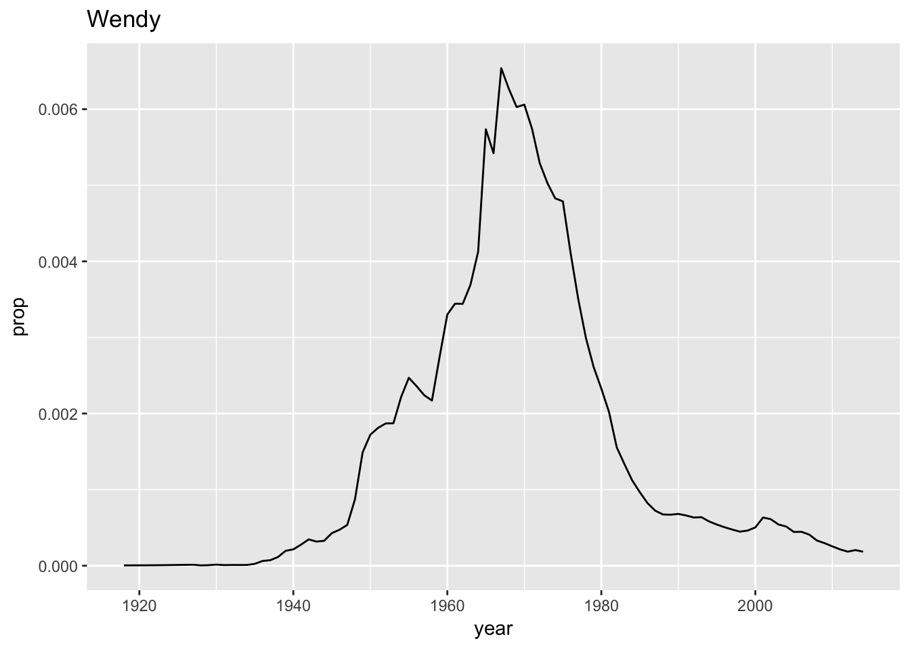
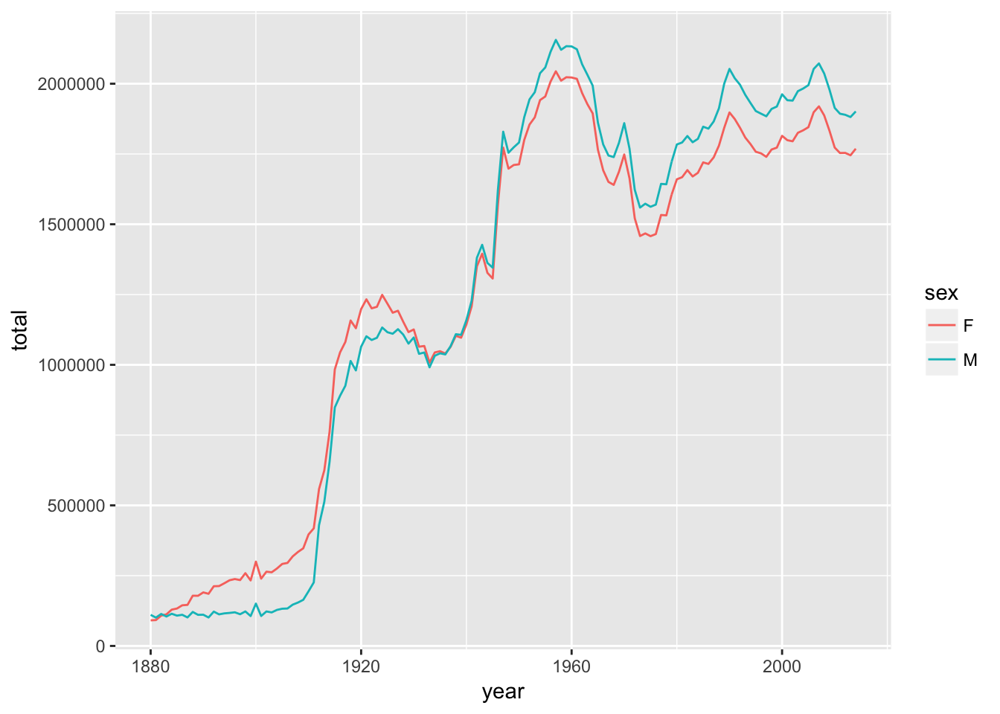
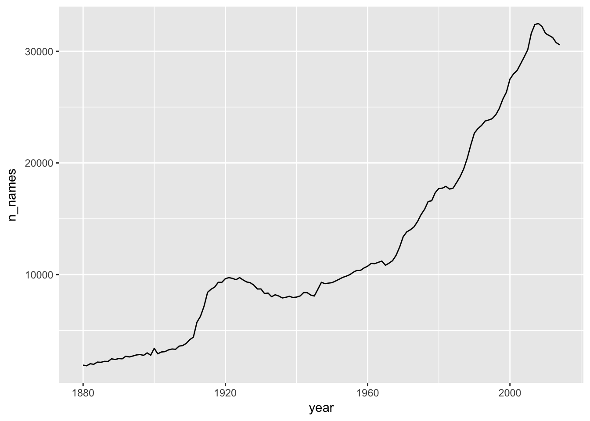

Python programmers believe that there should be one – and preferably only one – obvious way to do things. In R we love chaos and embrace originality. Therefore, we often have many ways to try.
For data manipulation, we have a solid set of tools in base R like subset, duplicated, cbind, rbind, match and four ways to use [ operator (numeric index, negative numeric index, logical index, and character index). For example:
var = c(a = 1, b = 2, c = 3, d = 4)
var[1:2]
var[-(3:4)]
var[c(TRUE,TRUE,FALSE,FALSE)]
var[c("a","b")]Here I will talk about package dplyr that can be installed as install.packages(dplyr) and loaded as library(dplyr). The package gains popularity due to its speed and readable code (%>% operator).
Dataset babynames
Install and load package babynames with names of male and female babies in US Social Security Administration (from 1880 to 2014).
Get the info about the dataset with ?babynames and View(babynames).
Single table verbs
The are six single table verbs:
filter()- extract casesarrange()- reorder casesgroup_by()- group casesselect()- extract variablesmutate()- create new variablessummarise()- summarise variables / create cases
Download Data Transformation Cheat Sheet to see other dplyr data transformations.
filter
Extract rows that meet logical criteria, see ?filter for help. Also, see ?Comparison and ?base::Logic for logical operators in R.
Challenge 1
Try to plot a proportion of the name “Wendy” in US population.

arrange
Order rows from smallest to largest values. See ?arrange for help.
Challenge 2
What was the most popular name in a single year? In what year was Wendy the most popular?
select
Extract columns by name. See ?select and Select Helpers in the cheat sheet.
mutate
Create new columns, see ?mutate.
Challenge 3
Create a new table babynames2 with a new percent column perc = 100*prop, then drop the column prop.
## # A tibble: 1,825,433 × 5
## year sex name n perc
## <dbl> <chr> <chr> <int> <dbl>
## 1 1880 F Mary 7065 7.238359
## 2 1880 F Anna 2604 2.667896
## 3 1880 F Emma 2003 2.052149
## 4 1880 F Elizabeth 1939 1.986579
## 5 1880 F Minnie 1746 1.788843
## 6 1880 F Margaret 1578 1.616720
## 7 1880 F Ida 1472 1.508119
## 8 1880 F Alice 1414 1.448696
## 9 1880 F Bertha 1320 1.352390
## 10 1880 F Sarah 1288 1.319605
## # ... with 1,825,423 more rowssummarise
Compute table of summaries.
Challenge 4
- Create a summary that displays the min, mean, and max
propfor Wendy. - Determine how many unique names appear in the data set. (see cheat sheet or help for
n_distinct). - How many times a single names was given to \(1\%\) or more of the boys or girls?
Operator %>%
A little bunny hopped though the forest, scooped up the field mouse and bopped on his head. It could be expressed as follows.
foo_foo <- little_bunny()
foo_foo2 <- hop_through(foo_foo, forest)
foo_foo3 <- scoop_up(foo_foo2, field_mouse)
bop_on(foo_foo3, head)Or the equivalently as…
bop_on(
scoop_up(
hop_through(little_bunny(), forest),
field_mouse
),
head)Ugly, is not it?
The operator %>% enables us to sequentially describe the procedure without creating extra variables.
little_bunny() %>%
hop_through(forest) %>%
scoop_up(field_mouse) %>%
bop_on(head)Grouping cases
Groups cases by common values.
Are there more boys in the data set or girls?
babynames %>%
group_by(sex) %>%
summarise(total = sum(n))## # A tibble: 2 × 2
## sex total
## <chr> <int>
## 1 F 167070477
## 2 M 170064949How does boys vs. girls ratio changes over time?
babynames %>%
group_by(year, sex) %>%
summarise(total = sum(n)) %>%
ggplot(aes(x = year, y = total, color = sex)) +
geom_line()
Challenge 5:
Plot the number of unique names by year over time. Does it change? (Note in English, the same name could be given to a boy and a girl at the same year)

Joining datasets
Two table verbs
There are multiple ways to join tables x and y.
For example, imagine you want to join a table of airports to a table of flights. What should happen to airports with no flight? And what should happen to flights from airports not included in airports table?
inner_join: return all rows fromxwhere there are matching values iny, and all columns fromxandy. If there are multiple matches betweenxandy, all combination of the matches are returned.left_join: same asinner_joinbut also keeps rows inxwith no match iny(addNAvalues)right_join: same asinner_joinbut also keeps rows inywith no match inx(addNAvalues)full_join: return all rows and all columns from both x and y. Where there are not matching values, returns NA for the one missing.
Dataset nycflights13
Data about every flight that departed La Guardia, JFK, or Newark airports in 2013.
# install.packages("nycflights13")
library(nycflights13)Look at ?flights and ?airlines tables.
Challenge 6:
Which airlines had the largest arrival delays? Try to complete the template below.
flights %>%
filter(!is.na(arr_delay)) %>%
... join airlines to flights ... %>%
group_by( ... ) %>%
... compute the average delay ... %>%
arrange( ...order by delay... )flights %>%
filter(!is.na(arr_delay)) %>%
left_join(airlines, by = "carrier") %>%
group_by(name) %>%
summarise(delay = mean(arr_delay)) %>%
arrange(-delay)## # A tibble: 16 × 2
## name delay
## <chr> <dbl>
## 1 Frontier Airlines Inc. 21.9207048
## 2 AirTran Airways Corporation 20.1159055
## 3 ExpressJet Airlines Inc. 15.7964311
## 4 Mesa Airlines Inc. 15.5569853
## 5 SkyWest Airlines Inc. 11.9310345
## 6 Envoy Air 10.7747334
## 7 Southwest Airlines Co. 9.6491199
## 8 JetBlue Airways 9.4579733
## 9 Endeavor Air Inc. 7.3796692
## 10 United Air Lines Inc. 3.5580111
## 11 US Airways Inc. 2.1295951
## 12 Virgin America 1.7644644
## 13 Delta Air Lines Inc. 1.6443409
## 14 American Airlines Inc. 0.3642909
## 15 Hawaiian Airlines Inc. -6.9152047
## 16 Alaska Airlines Inc. -9.9308886Summary
dplyr is a library for data transformation and manipulation. It is part of a collection of packages called Tidyverse. It uses a modified version of data frames called tibbles.
Sources:
- Data Transformation with dplyr (rstudio::conf, Tidyverse workshop)
- R for Data Science